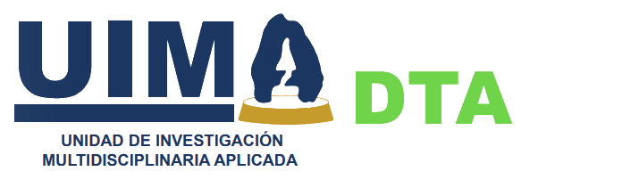

Departamento de Tecnología Ambiental

Ing. Gabriela Nava Amezcua
Jefe del Departamento
- 📍 Edificio A de la Unidad de Investigación Multidisciplinaria II, planta baja
- 📞 5556231750 Ext. 38968 y 38969
- ✉️ detea@acatlan.unam.mx
🎯 Nuestro Objetivo
- Contribuir al desarrollo sostenible mediante la implementación de estrategias innovadoras para resolver problemas en el área químico-industrial y ambiental a través de la promoción y participación en proyectos tecnológicos y la vinculación con instituciones educativas públicas y privadas, con la finalidad de que la comunidad de la FES Acatlán se involucre activamente en cada uno de los programas.
📋 Funciones
▼
- Establecer estrategias con la finalidad de solucionar problemas relacionados al área químico-industrial.
- Promover y participar en la elaboración de proyectos tecnológicos orientados a resolver la problemática del medio ambiente.
- Fomentar la vinculación con instituciones educativas, así como con instituciones públicas y privadas con el objeto de generar convenios, proyectos de investigación y favorecer el intercambio de estudiantes con fines de estancias de investigación y servicio social.
- Implementar el Sistema de Gestión de la Calidad en los laboratorios del Departamento, así como la mejora continua.
- Desarrollar el programa anual de actividades de investigación y de servicios del Departamento.
- Proporcionar y regular la vinculación con los departamentos de la Coordinación de la Unidad de Investigación Multidisciplinaria Aplicada, para el mejor aprovechamiento de los recursos y de las áreas comunes.
- Promover la formación de recursos humanos en Tecnología Ambiental.
- Desarrollar actividades en vinculación con los programas de licenciatura y posgrado.
- Desarrollar los informes de actividades de acuerdo a los lineamientos y períodos establecidos por la Dirección de la Facultad.
- Las demás que le encomiende la Coordinación de la Unidad de Investigación Multidisciplinaria Aplicada.
🚀 Proyectos
▼
-
Escalamiento en la producción de compostaje de residuos de poda y jardinería en la FES Acatlán.
- Fecha de inicio: 12 de agosto del 2024
- Fecha de término: 12 de agosto del 2025